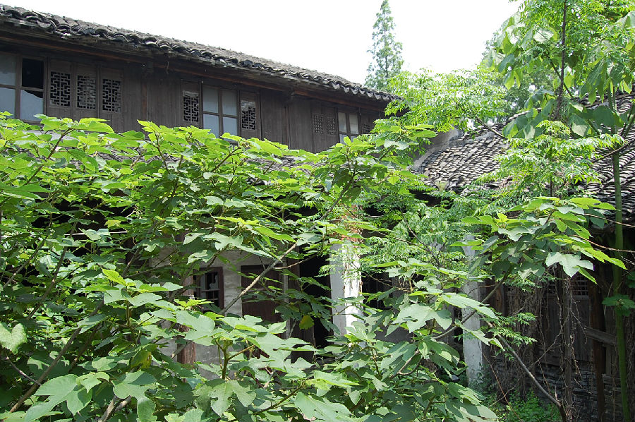

嘉兴市文物保护网 · 市级文物保护点 · 2020-11-06 · 原文

张绍忠故居位于嘉兴市秀洲区油车港镇马厍村150号，村委西南侧50米左右，为我国著名物理学家张绍忠（1896～1947）的故居。据村委会工作人员介绍和其形制判断为清代建筑。建筑布局整体形状呈“凹”字形，砖木结构，总占地面积204平方米，坐北朝南，中间为主楼，两侧为厢房。主楼为两层五开间，面阔17.06米，进深10米，一层顶高3.58米，二层顶高4.3米。朝南有廊，抬梁和穿枋式并用，五檩，前后各单步，每开间有隔断。主楼明间为厅堂，三面用长木板墙围成，地面及走廊铺设大块方砖，厅堂内有两个复式莲花状柱墩，柱子粗大。张绍忠毕生为了祖国的教育事业鞠躬尽瘁，是我国最早从事高压物理研究的物理学家之一。故居是张绍忠少年时居住的地方，对于研究其生平有较高的历史价值。2009年公布为嘉兴市文物保护点。